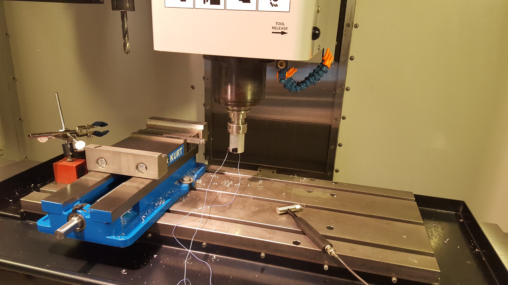
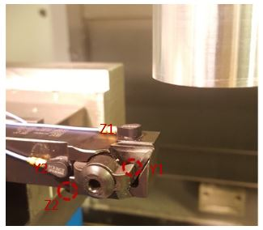
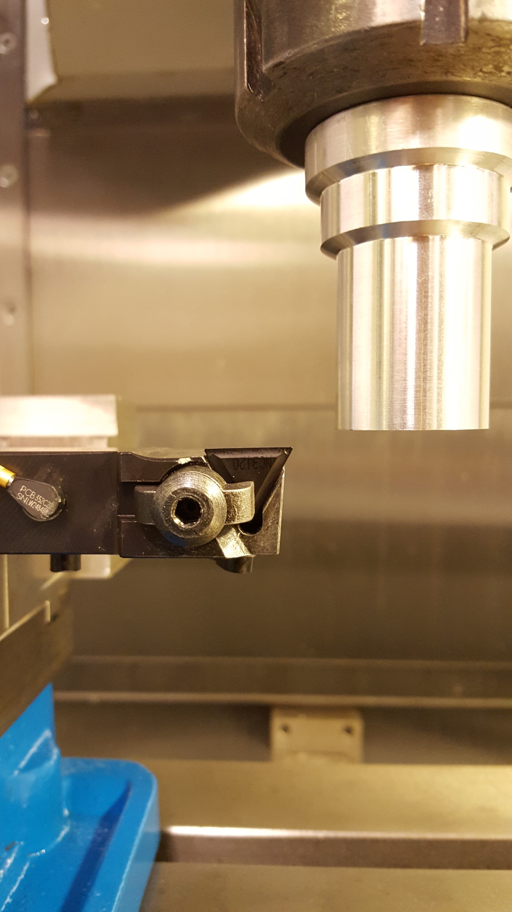
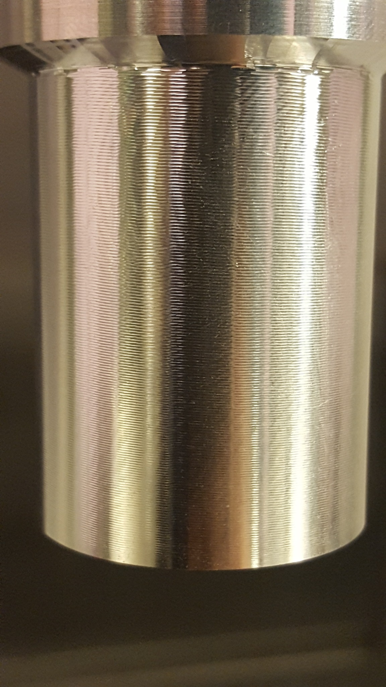
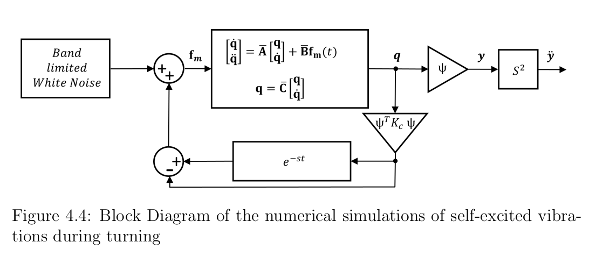
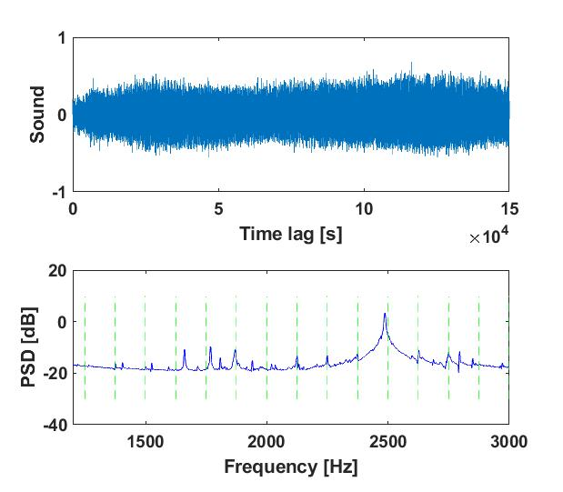
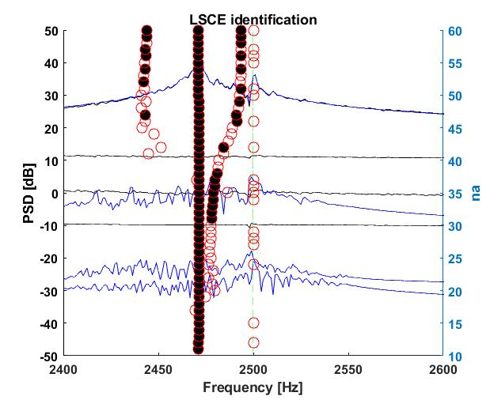
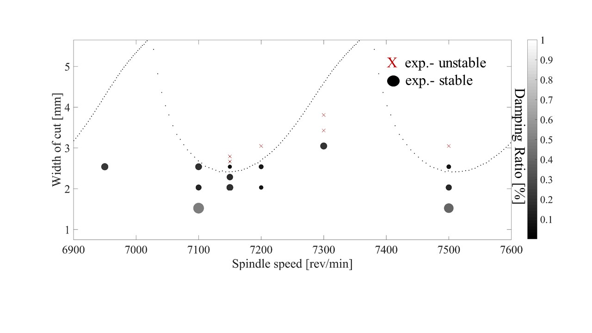

Estimating machining stability from in-process vibration measurements by identifying dominant structural poles, modal damping, and the approach to regenerative instability.
The work was published in Mechanical Systems and Signal Processing as “Estimation of vibration stability in turning using operational modal analysis.”
Conventional chatter-monitoring methods commonly detect instability after vibration amplitudes have already grown and chatter marks may have formed on the workpiece.
The objective of this research was different: estimate the stability margin while the cutting process is still stable by identifying the dynamics of the turning system directly from vibration measurements obtained during machining.
The experimental system combined controlled machining conditions with multi-channel vibration acquisition and independent acoustic monitoring.

Accelerometers were positioned at two locations in each principal tool-vibration direction, providing four measured degrees of freedom for modal identification.
This multi-channel configuration enabled direct and cross-correlation analysis between vibration signals measured at different locations and directions.


Regenerative chatter arises from delayed feedback between the current cutting pass and surface waviness generated during the previous revolution.
Once unstable vibration fully develops, the resulting oscillation can degrade surface quality and leave visible chatter marks on the workpiece.

Although the application was machining dynamics, the underlying framework was fundamentally a dynamic-systems and stability problem.

Multi-degree-of-freedom tool dynamics were represented in modal and state-space form for numerical simulation.
Regenerative cutting forces were represented as delayed feedback linking the current tool motion to vibration from the previous workpiece revolution.
Stability was evaluated through the dominant system poles and their corresponding damping ratios.
Although the application was machining dynamics, the analytical framework relied on many of the same foundations that later became central to my robotics work: state-space modeling, feedback dynamics, numerical simulation, eigenvalue-based stability analysis, system identification, and sensor-driven estimation.
Strong spindle harmonics coexist with structural vibration during turning, making direct modal identification significantly more difficult than in controlled impact testing.

Harmonic excitation from spindle rotation can dominate the measured response and interfere with conventional output-only modal identification.

Time Domain Poly Reference identification was used successfully in numerical simulations but became less reliable when strong experimental harmonics were present.
Known harmonic frequencies were incorporated explicitly as undamped poles, allowing nearby structural poles and modal damping to be estimated more robustly.
The central result was not simply detecting chatter. The identified structural damping provided a quantitative indication of how close the process was to its stability boundary.
| Spindle Speed | Width of Cut | Identified Mode | Damping | Condition |
|---|---|---|---|---|
| 7500 rpm | 2.03 mm | ~2476 Hz | ~0.13% | Stable |
| 7500 rpm | 2.54 mm | ~2477 Hz | ~0.066% | Near stability boundary |
| 7500 rpm | 3.05 mm | Chatter | — | Unstable |

Traditional chatter monitoring focuses on identifying vibration after instability has already developed. This work instead estimated the dynamics of the system while machining remained stable.
As the stability boundary was approached, the damping of the dominant structural pole decreased. This provided a physically meaningful numerical indicator of declining stability before the vibration became fully unstable.
The method was most effective when the process was close enough to the stability boundary for the structural mode to become observable in the measured vibration spectrum.
Highly stable cuts and operating conditions where a structural frequency coincided with a spindle harmonic could suppress the structural mode and prevent reliable identification.
This work formed my MASc research at the University of Victoria and combined analytical modeling, numerical simulation, experimental modal analysis, machining experiments, sensor instrumentation, MATLAB-based signal processing, and system identification.
The research strengthened the dynamic-systems and numerical analysis foundation that later carried directly into my work in robotics, autonomous systems, estimation, and control.
S. Kim · K. Ahmadi
Mechanical Systems and Signal Processing, 2019